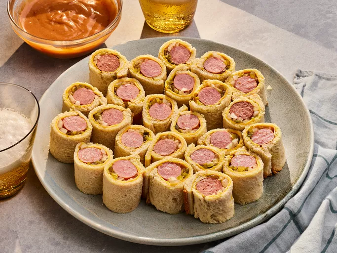

Hotdog Rollups Recipe

Description
Here's a fun and tasty twist on a classic dog.
Ingredients
- 8 (1-ounce) slices white bread (such as Wonder Bread®)
- 2 tablespoons yellow mustard
- 4 thin slices sharp Cheddar cheese, halved
- 8 beef hot dogs (such as Oscar Mayer® Classic Wieners Hot Dogs)
- 4 tablespoons minced yellow onion
- 2 tablespoons plus 2 teaspoons sweet pickle relish
- 1/4 cup barbecue sauce
- 1/4 cup mayonnaise
- 1/2 teaspoon seasoned salt (such as Lawry’s®)
Steps
- Gather all ingredients.
- Hotdog Roll-Ups ingredients on a counter
Dotdash Meredith Food Studios
Using a rolling pin, roll each bread slice until entirely flat.
Trim just the crust off each bread slice, forming a 4x4-inch square.
Spread each bread slice with an even layer of mustard (about 3/4 teaspoon per slice).
- White bread with mustard on a cutting board
Dotdash Meredith Food Studios
Working with 1 slice of bread at a time, place a halved cheese slice on the edge of the bread
closest to you; place 1 hot dog horizontally on top of the cheese slice. If needed, trim the ends of
the hot dog so that no hot dog extends over edges of bread. Spoon 1 1/2
teaspoons onion horizontally across the cheese slice above the hot dog, followed by 1 teaspoon of relish.
- Hotdog Roll-Up ingredients on a slice of white bread
Dotdash Meredith Food Studios
Roll up tightly, applying gentle pressure to help seal the bread seams together.
Slice crosswise into 3 equal pieces (about 1 1/4-inches each), and transfer to a serving platter.
Repeat process with remaining ingredients. Preheat an air fryer to 400 degrees F (200 degrees C)
for 5 minutes, or according to manufacturer's instructions. Lightly coat tops and sides of
roll-ups with cooking spray. Working in 2 batches, add roll-ups to basket, spacing them 1/2-inch apart,
and cook until bread is lightly golden brown, about 5 minutes.
- Hotdog Roll-Ups being assembled on a counter, next to sliced Hotdog Roll-Ups on a platter
Dotdash Meredith Food Studios
Stir together barbecue sauce, mayonnaise, and seasoned salt in a small bowl until evenly combined.
- Barbecue sauce, mayonnaise, and seasoned salt mixture in a small bowl
Dotdash Meredith Food Studios
Serve hotdog roll-ups with mayonnaise mixture.